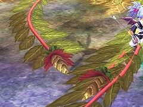

目次 > ゲームについて > 日本Falcom 攻略 > ZWEI II > ボス戦 > アビスフラワー
らんの眼
ZWEI II (ツヴァイ 2、ZWEI II Plus)
| 概要 | 情報 | 攻略チャート |
| フード交換 | ペットについて | ボス戦 |
| 敵キャラ一覧 | ハンターランク | G-コロッセオ |
| アイテム一覧 | ガジェット一覧 | トレジャー一覧 |
| ダンジョン一覧 | クリアデータ特典 | Plusの追加要素 |
| ZWEI II攻略へ | 目次へ戻る |
| アビスフラワー 前半・中盤 |
| 終始、ラグナの攻撃で対処できます。 前半・中盤はボス本体へ攻撃できないので、ツル(腕?)の先端にあるつぼみを攻撃します。  ボスの攻撃としては、ツルを地面に叩きつけるのと、ツルを振り回す攻撃、そして花弁から黄色い物体(花粉?)を吐き出す攻撃があります。 個人的にはツルを叩きつけた後の方が攻撃できる時間も長く、攻撃しやすいと思うのですが、とにかく、ツルを叩きつけたり、振り回したりした後で、ツルの先端を攻撃してください。ツルの先端は動かないので、多段ヒットが狙える「バーニングギア」での攻撃が非常に効果的です。G-コロッセオで挑戦する場合、レベルが高ければ「ブレードギア」の方が遙かにいいのですが。 また、ちょっと危険ですが何もせず宙をさまよっているツルを攻撃することも可能です。 花びらから黄色い物体を吐き出す攻撃は、適当に動き回っていればよけられると思うので、あまり気にしなくてもいいと思います。 前半のツル4本、中盤のツル2本を破壊することで、後半戦となります。 |
| アビスフラワー 後半 |
| 後半はツルが5本となり、ボス本体への攻撃が可能となります。前半で黄色い物体を吐き出していた一番大きな花びらを攻撃することで、ボス本体へダメージが与えられます。 ボスの攻撃として一番危険なのが、ツル5本と本体を同時に振り回す攻撃です。主人公が移動できる場所全体が攻撃範囲なので、やり過ごすのはかなり難しいです。 他の攻撃として、ツル5本と本体を叩きつける攻撃があります。これは振り回すものと比べればよけやすいですし、ボス本体とツルへ同時に攻撃できるので、ある意味チャンスかもしれません。 さらに、困った攻撃があり、本体を突進させて主人公を食べてしまうものがあります。よけるのはさほど難しくありませんが、食べられるとボスの体力が回復してしまい、食らったダメージよりも痛い結果になることが多いです。 レベルが十分に高ければ(30 くらい)、後半に入ってすぐにアビスフラワーの根本へ移動し、ラグナのジャンプ攻撃を連発すれば、アビスフラワーが攻撃する前に倒せます。 アビスフラワーの根本は、アンチトラップを装備してもダメージを受けますが、約0.5 秒以上根本にいなければ、ダメージを受けません。 |
| 概要 | 情報 | 攻略チャート |
| フード交換 | ペットについて | ボス戦 |
| 敵キャラ一覧 | ハンターランク | G-コロッセオ |
| アイテム一覧 | ガジェット一覧 | トレジャー一覧 |
| ダンジョン一覧 | クリアデータ特典 | Plusの追加要素 |
| ページの上部へ | ZWEI II 攻略へ | 目次へ戻る |